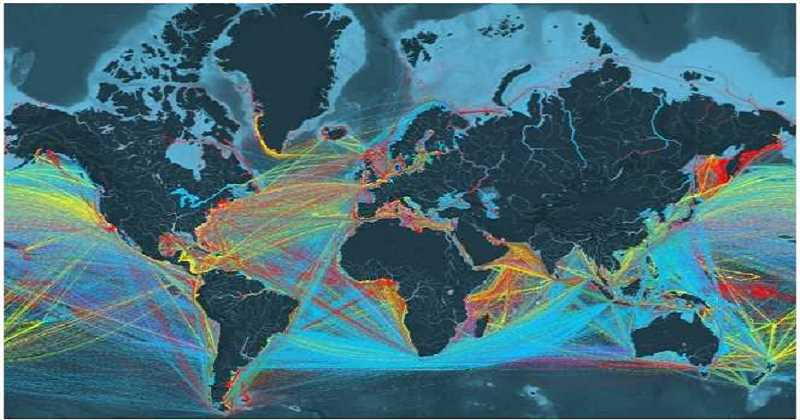

Debido a la gran interconexión entre países, el Instituto Económico KOF, de Suiza, presentó su Índice de Globalización.
Este índice toma en cuenta tres factores: economía, sociedad y política.
Se calcula utilizando datos referentes a flujos económicos, flujos de información y restricciones económicas, así como datos sobre proximidad cultural.
El índice está basado en 23 variables. Además cubre 187 países y se refiere al periodo comprendido entre 1970 y 2013.
Holanda, Irlanda y Bélgica son los tres países más globalizados en el mundo, según las variantes del estudio.
Destaca el índice la recuperación gradual de la economía global, así como la
normalización de la política monetaria de la Reserva Federal de Estados Unidos.
Además resalta que la zona euro salió de la recesión, aunque los países que componen este bloque siguen cargando una deuda pública muy pesada.
A continuación los 10 países más globalizados.
- Holanda
- Irlanda
- Bélgica
- Austria
- Suiza
- Singapur
- Dinamarca
- Suecia
- Hungría
- Canadá
